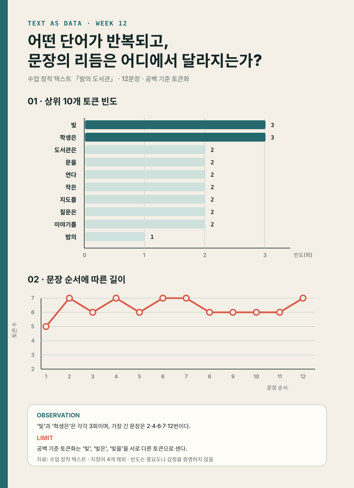

원문 → 토큰 → 빈도표 → 두 그래프 → 텍스트 패턴 포스터
오늘의 학습 목표
- Colab에서 한글 그래프를 위한 글꼴을 준비하고 필요한 도구를 불러올 수 있습니다.
raw_text를 보존하면서 문장 목록과 분석용 텍스트를 새 변수에 만들 수 있습니다.re.sub(),split()과 목록 조건식을 이용해 토큰 목록을 만들 수 있습니다.Counter와 pandas로 전체 단어 빈도표를 만들고 CSV로 저장할 수 있습니다.Axes.barh()와Axes.plot()으로 빈도 비교와 문장 순서를 서로 다른 그래프로 표현할 수 있습니다.- 질문·관찰·분석 규칙·출처·한계를 포함한 1600 × 2200 포스터를 저장하고 수치를 검증할 수 있습니다.
- 0-7분환경과 원문
도구·한글 글꼴·원문·메타데이터를 준비합니다.
- 7-17분정규화·토큰화
문장과 공백 기준 토큰 목록을 만듭니다.
- 17-26분빈도표
Counter로 세고 전체 CSV를 저장합니다.
- 26-36분빈도 막대
상위 열 개 토큰을 정확한 길이로 비교합니다.
- 36-44분문장 흐름
열두 문장의 원문 토큰 수를 순서대로 그립니다.
- 44-48분포스터 구성
두 그래프와 질문·관찰·한계를 배치합니다.
- 48-50분저장·검증
CSV·PNG의 내용과 크기를 확인합니다.
수업 운영: 기본 50분과 확장 60분
기본 50분에는 CELL 1부터 CELL 7까지 위에서 아래로 한 번씩 실행합니다. 각 셀의 예상 수량과 같아야 다음 셀로 이동합니다. 모든 확인이 끝난 경우에만 50-60분 확장에서 빛 문자열이 들어 있는 원문 문장을 자동으로 찾습니다.
오늘 코드 전체를 한 문장으로 읽기
12문장 원문을 보존하고 76개의 공백 토큰에서 지정어 네 개를 제외한 뒤, 72개 토큰의 전체 빈도표와 열두 문장의 길이를 두 그래프로 만들어 하나의 포스터에 배치합니다.
완성 결과를 확인하고 같은 노트북에서 시작합니다
아래 노트북에는 이 교시의 코드와 3교시 자동 검사가 함께 들어 있습니다. 먼저 Colab 사본을 만든 뒤 CELL 1부터 순서대로 실행합니다.
Counter 공식 문서 ↗는 빈도 계산 단계에서 참고합니다.

0-7분 · CELL 1: 도구·한글 글꼴·원문·메타데이터 준비하기
새 Colab 노트북을 열고 코드 셀을 두 개 만듭니다. 첫 번째 짧은 셀은 Colab 환경에 나눔고딕 글꼴을 준비합니다. 이 명령은 그래프의 한글이 네모로 보이지 않게 하는 환경 설정이며 Python 문법 암기 대상이 아닙니다.
CELL 1A · Colab 한글 글꼴 설치
!apt-get -qq install fonts-nanum셀 왼쪽의 실행 버튼이 멈추고 오류 문장이 보이지 않으면 다음 셀로 이동합니다. 같은 런타임에서 한 번 실행하면 됩니다. 런타임을 초기화한 경우에는 다시 실행합니다.
CELL 1B · 라이브러리와 원문 준비
import re
from collections import Counter
from pathlib import Path
import matplotlib.pyplot as plt
import matplotlib.font_manager as font_manager
import pandas as pd
font_path = Path(
"/usr/share/fonts/truetype/nanum/NanumGothic.ttf"
)
assert font_path.is_file(), "CELL 1A의 글꼴 설치를 먼저 실행하세요."
font_manager.fontManager.addfont(str(font_path))
font_name = font_manager.FontProperties(
fname=str(font_path)
).get_name()
plt.rcParams["font.family"] = font_name
plt.rcParams["axes.unicode_minus"] = False
text_title = "밤의 도서관"
text_provider = "Contents Programming Practice 수업 창작 자료"
use_terms = "교육 목적 분석과 시각화에 사용"
analysis_question = (
"어떤 단어가 반복되고, "
"문장의 리듬은 어디에서 달라지는가?"
)
raw_text = """밤의 도서관은 조용히 문을 연다. 작은 빛 하나가 긴 책상 위에 머문다. 학생은 빛 아래에서 오래된 지도를 펼친다. 지도에는 사라진 골목과 낯선 이름이 남아 있다. 학생은 지도 옆에 작은 메모를 남긴다. 메모에는 빛, 골목, 질문이라는 세 단어가 적힌다. 질문은 길을 만들고 길은 새로운 이야기를 부른다. 이야기는 창가의 빛을 따라 천천히 길어진다. 도서관은 늦은 시간에도 조용한 이야기를 품는다. 학생은 마지막 문장을 읽고 지도를 접는다. 문은 닫히지만 질문은 메모 속에 남는다. 다음 밤이 오면 빛은 다시 문을 연다."""
original_text_snapshot = raw_text
assert len(raw_text) == 291
assert raw_text.count(".") == 12
print("제목:", text_title)
print("글자 수:", len(raw_text))
print("마침표 수:", raw_text.count("."))
print("원문 앞부분:", raw_text[:45])import는 이미 만들어진 도구를 현재 노트북으로 가져옵니다. re는 문장부호를 찾고 바꾸며, Counter는 같은 토큰을 셉니다. pandas는 표를 만들고, Matplotlib은 그래프와 포스터를 만듭니다. Path는 저장된 파일과 글꼴이 실제로 존재하는지 확인합니다.
| 이름 | 자료형 | 담는 내용 | 나중의 역할 |
|---|---|---|---|
text_title | 문자열 | 밤의 도서관 | 포스터 자료 정보 |
text_provider | 문자열 | 수업 창작 자료 제공자 | 출처 표기 |
use_terms | 문자열 | 교육 목적 이용 조건 | 이용 범위 표기 |
analysis_question | 문자열 | 분석이 답할 공통 질문 | 포스터 제목 |
raw_text | 문자열 | 문장부호를 포함한 원문 전체 | 모든 분석의 입력 |
original_text_snapshot | 문자열 | 처음 원문의 사본 | 원문이 바뀌지 않았는지 검사 |
처음에는 원문 안의 단어를 고치지 않는다
띄어쓰기나 조사 때문에 빈도표가 마음에 들지 않더라도 raw_text를 수정해 결과를 맞추지 않습니다. 먼저 정한 규칙으로 분석하고, 공백 기준 토큰화가 만든 한계를 기록합니다.
AssertionError: CELL 1A의 글꼴 설치를 먼저 실행하세요가 보일 때
CELL 1A를 실행한 뒤 설치가 끝날 때까지 기다립니다. 그다음 CELL 1B를 다시 실행합니다. 런타임을 다시 시작했다면 글꼴 설치도 다시 실행해야 합니다.
SyntaxError: unterminated triple-quoted string이 보일 때
raw_text = """로 시작한 원문 끝에 같은 큰따옴표 세 개가 있는지 확인합니다. 큰따옴표가 두 개이거나 네 개이면 여러 문장을 하나의 문자열로 묶을 수 없습니다.
출력이 291자와 마침표 12개가 아닐 때
원문 안에서 글자, 공백 또는 마침표가 바뀌었습니다. 직접 숫자를 고치지 말고 제공된 원문을 CELL 1B에 다시 붙여 넣습니다. 이후의 모든 예상 수량은 이 원문을 기준으로 합니다.
7-17분 · CELL 2: 문장 분리·정규화·공백 기준 토큰화 실행하기
이제 원문에서 두 갈래의 목록을 만듭니다. 첫 번째는 문장 길이를 계산할 sentences이고, 두 번째는 단어 빈도를 계산할 tokens입니다. 두 갈래 모두 raw_text를 입력으로 사용하지만 중간 결과는 다른 이름에 저장합니다.
sentence_parts = re.split(r"[.!?]+", raw_text)
sentences = [
sentence.strip()
for sentence in sentence_parts
if sentence.strip()
]
normalized_text = re.sub(
r"[^0-9A-Za-z가-힣\s]",
" ",
raw_text,
)
raw_tokens = normalized_text.split()
stopwords = {"위에", "아래에서", "옆에", "속에"}
tokens = [
token
for token in raw_tokens
if token not in stopwords
]
assert raw_text == original_text_snapshot
assert len(sentences) == 12
assert len(raw_tokens) == 76
assert len(set(raw_tokens)) == 65
assert len(tokens) == 72
assert len(set(tokens)) == 61
assert all(token not in tokens for token in stopwords)
print("문장 수:", len(sentences))
print("원문 토큰:", len(raw_tokens), "개 /", len(set(raw_tokens)), "종")
print("분석 토큰:", len(tokens), "개 /", len(set(tokens)), "종")
print("제외 토큰:", sorted(stopwords))
print("분석 토큰 앞부분:", tokens[:12])re.split(r"[.!?]+", raw_text)는 마침표·물음표·느낌표가 한 번 이상 이어진 곳을 문장 경계로 봅니다. strip()은 문장 앞뒤의 공백을 없앱니다. if sentence.strip()은 문장부호 뒤에 생긴 빈 조각을 목록에 넣지 않습니다.
re.sub()의 첫 번째 값은 남길 문자와 바꿀 문자를 정하는 규칙입니다. 대괄호 안의 첫 글자 ^는 “뒤에 적힌 범위가 아닌 문자”라는 뜻입니다. 따라서 숫자, 영문자, 완성형 한글 음절과 공백이 아닌 문자를 찾아 공백으로 바꿉니다. 이 규칙은 오늘 제공한 텍스트를 위한 입문 규칙이며 모든 언어와 기호를 완전하게 처리하는 보편 규칙은 아닙니다.
| 이름 | 자료형 | 항목 수 | 예시 |
|---|---|---|---|
sentence_parts | 목록 | 빈 마지막 조각 포함 가능 | 문장부호로 나눈 원시 결과 |
sentences | 목록 | 12개 | 밤의 도서관은 조용히 문을 연다 |
normalized_text | 문자열 | 한 편 | 쉼표와 마침표가 공백으로 바뀐 사본 |
raw_tokens | 목록 | 76개, 65종 | 밤의, 도서관은, 조용히 |
tokens | 목록 | 72개, 61종 | 지정어 네 개를 제외한 분석 목록 |
목록 조건식을 왼쪽부터 읽는 방법
tokens = [
token
for token in raw_tokens
if token not in stopwords
]for token in raw_tokens: 원문 토큰을 앞에서부터 하나씩 꺼냅니다.if token not in stopwords: 현재 토큰이 제외 목록에 없는지 묻습니다.- 조건이 참이면 맨 앞의
token을 새 목록에 넣습니다. - 모든 토큰을 확인한 결과가
tokens에 저장됩니다.
NameError: name 'raw_text' is not defined가 보일 때
CELL 1B가 실행되지 않았거나 런타임이 초기화되었습니다. 위에서부터 CELL 1A와 CELL 1B를 다시 실행한 뒤 CELL 2를 실행합니다. 아래 셀만 반복 실행해 변수의 실행 순서를 건너뛰지 않습니다.
토큰 목록에 빛골목이 보일 때
re.sub()의 두 번째 인자가 빈 문자열인지 확인합니다. 쉼표를 빈 문자열로 바꾸면 양쪽 단어가 붙습니다. 두 번째 인자는 따옴표 사이에 공백 한 칸이 있는 " "이어야 합니다.
분석용 토큰 수가 72개가 아닐 때
원문이 291자인지 먼저 확인합니다. 그다음 stopwords에 네 값이 정확히 들어 있는지, 조건이 if token not in stopwords인지 확인합니다. in으로 쓰면 제외할 단어만 남아 결과가 반대로 바뀝니다.
17-26분 · CELL 3: Counter로 빈도를 세고 전체 CSV 저장하기
Counter(tokens)는 토큰을 열쇠, 반복 횟수를 값으로 가진 계수표를 만듭니다. most_common()은 빈도가 큰 순서로 (토큰, 횟수) 쌍을 돌려줍니다. pandas DataFrame으로 바꾸면 열 이름이 있는 표로 저장하고 시각화에 사용할 수 있습니다.
token_counter = Counter(tokens)
frequency_df = pd.DataFrame(
token_counter.most_common(),
columns=["word", "count"],
)
top10_df = frequency_df.head(10).copy()
frequency_filename = "week12_demo_word_frequency.csv"
frequency_df.to_csv(
frequency_filename,
index=False,
encoding="utf-8-sig",
)
expected_top10 = [
("빛", 3),
("학생은", 3),
("도서관은", 2),
("문을", 2),
("연다", 2),
("작은", 2),
("지도를", 2),
("질문은", 2),
("이야기를", 2),
("밤의", 1),
]
assert len(frequency_df) == 61
assert int(frequency_df["count"].sum()) == 72
assert list(top10_df.itertuples(index=False, name=None)) == expected_top10
assert Path(frequency_filename).is_file()
print(top10_df.to_string(index=False))
print("전체 빈도 행:", len(frequency_df))
print("빈도 합계:", int(frequency_df["count"].sum()))
print("저장 파일:", frequency_filename)| 순위 | word | count | 읽는 문장 |
|---|---|---|---|
| 1 | 빛 | 3 | 정확히 같은 토큰 빛이 세 번 등장 |
| 2 | 학생은 | 3 | 정확히 같은 토큰 학생은이 세 번 등장 |
| 3 | 도서관은 | 2 | 두 번 등장 |
| 4 | 문을 | 2 | 두 번 등장 |
| 5 | 연다 | 2 | 두 번 등장 |
| 6 | 작은 | 2 | 두 번 등장 |
| 7 | 지도를 | 2 | 두 번 등장 |
| 8 | 질문은 | 2 | 두 번 등장 |
| 9 | 이야기를 | 2 | 두 번 등장 |
| 10 | 밤의 | 1 | 빈도 1인 여러 토큰 중 원문에서 먼저 등장 |
빈도 1인 토큰은 여러 개입니다. Counter.most_common()은 빈도가 같으면 입력에서 먼저 만난 순서를 유지하므로 밤의가 열 번째에 놓입니다. 순위가 같을 수 있다는 사실을 감추지 않고, 포스터에서는 모든 막대 끝에 실제 횟수를 표시합니다.
CSV에는 상위 열 개가 아니라 61종 전체를 저장한다
포스터는 읽기 쉬운 열 개만 보여 주지만, week12_demo_word_frequency.csv에는 분석한 토큰 61종을 모두 저장합니다. 그래프에 보이지 않는 값도 다시 확인할 수 있어야 하기 때문입니다. 빈도 열의 합계는 분석용 토큰 수 72와 같아야 합니다.
확인: Counter의 61개 행과 토큰 72개는 왜 다른가?
61은 서로 다른 토큰의 종류 수이고, 72는 반복을 포함한 전체 토큰 수입니다. 빈도표의 각 count를 모두 더하면 72가 됩니다.
빈도 1인 토큰의 순서가 다르게 보일 때
원문이나 토큰 순서가 바뀌었는지 확인합니다. 빈도가 같은 토큰은 원문에서 처음 등장한 순서의 영향을 받습니다. 숫자가 같은 항목에 억지로 10위와 11위의 의미 차이를 부여하지 않습니다.
26-36분 · CELL 4: 상위 열 개 토큰을 가로 막대그래프로 그리기
가로 막대그래프는 단어를 왼쪽에서 자연스럽게 읽고, 공통 기준선에서 길이를 비교하기 좋습니다. barh()는 목록의 첫 항목을 아래에 놓으므로 상위 열 개 표의 행 순서를 뒤집어 1위가 화면 위쪽에 오도록 합니다. 값과 순위는 바꾸지 않고 그리는 순서만 바꿉니다.
bar_df = top10_df.iloc[::-1].reset_index(drop=True)
maximum_count = int(bar_df["count"].max())
bar_colors = [
"#25696f" if count == maximum_count else "#a9cbc7"
for count in bar_df["count"]
]
bar_fig, bar_ax = plt.subplots(
figsize=(9, 6),
dpi=130,
facecolor="#f4f0e7",
)
bar_ax.set_facecolor("#f4f0e7")
bars = bar_ax.barh(
bar_df["word"],
bar_df["count"],
color=bar_colors,
height=0.68,
)
bar_ax.set_title(
"「밤의 도서관」 상위 10개 토큰 빈도",
loc="left",
fontsize=17,
fontweight="bold",
pad=16,
)
bar_ax.set_xlabel("빈도(회)")
bar_ax.set_ylabel("토큰")
bar_ax.set_xlim(0, maximum_count + 0.8)
bar_ax.set_xticks(range(0, maximum_count + 1))
bar_ax.grid(axis="x", color="#c9d1ce", linewidth=0.8)
bar_ax.set_axisbelow(True)
for bar, count in zip(bars, bar_df["count"]):
bar_ax.text(
bar.get_width() + 0.08,
bar.get_y() + bar.get_height() / 2,
str(int(count)),
va="center",
fontsize=10,
fontweight="bold",
color="#152626",
)
bar_ax.spines["top"].set_visible(False)
bar_ax.spines["right"].set_visible(False)
bar_fig.tight_layout()
assert len(bars) == 10
assert bar_ax.get_xlim()[0] == 0
plt.show()| 코드 | 사용하는 값 | 화면에서의 역할 |
|---|---|---|
bar_df["word"] | 토큰 문자 | 세로축의 범주 이름 |
bar_df["count"] | 반복 횟수 | 막대의 가로 길이 |
bar_colors | 최댓값 여부 | 최고 빈도 두 막대 강조 |
set_xlim(0, maximum_count + 0.8) | 빈도축 범위 | 모든 막대가 0에서 출발 |
bar_ax.text() | 실제 count | 막대 끝의 정확한 횟수 |
가장 긴 막대는 한 개인가, 두 개인가?
상위 빈도표를 보고 그래프의 가장 긴 막대 수와 해당 토큰을 적은 뒤 코드를 실행합니다.
정답: 가장 긴 막대는 무엇인가?
빛과 학생은 두 개입니다. 두 토큰은 각각 3회이므로 같은 길이로 표시됩니다. 한 단어만 1위라고 강조하지 않습니다.
그래프의 한글이 네모나 빈 칸으로 보일 때
CELL 1A와 CELL 1B를 다시 실행한 뒤 CELL 4를 다시 실행합니다. 이미 만들어진 그래프는 글꼴 설정을 바꾸어도 자동으로 다시 그려지지 않으므로 그래프 셀도 다시 실행해야 합니다.
가장 긴 막대가 아래쪽에 보일 때
top10_df.iloc[::-1]가 있는지 확인합니다. barh()는 목록의 첫 항목을 아래에 놓으므로 순위표를 뒤집어 전달해야 1위 토큰이 위쪽에 보입니다. 값 자체가 틀린 것은 아니지만 이번 포스터의 읽는 순서를 맞춥니다.
36-44분 · CELL 5: 열두 문장의 길이를 원문 순서대로 그리기
단어 빈도 그래프는 문장 순서를 버리고 같은 토큰을 모았습니다. 두 번째 그래프는 반대로 문장 순서를 유지합니다. 각 문장에서 문장부호만 공백으로 바꾼 뒤 토큰 수를 세며, 문장 길이를 계산할 때는 지정어를 제외하지 않습니다. 표면적인 문장 길이를 보려면 원문에 있던 토큰을 모두 세어야 하기 때문입니다.
sentence_records = []
for sentence_order, sentence in enumerate(
sentences,
start=1,
):
normalized_sentence = re.sub(
r"[^0-9A-Za-z가-힣\s]",
" ",
sentence,
)
sentence_tokens = normalized_sentence.split()
sentence_records.append(
{
"sentence_order": sentence_order,
"token_count": len(sentence_tokens),
"sentence": sentence,
}
)
sentence_df = pd.DataFrame(sentence_records)
expected_lengths = [5, 7, 6, 7, 6, 7, 7, 6, 6, 6, 6, 7]
assert sentence_df["sentence_order"].tolist() == list(range(1, 13))
assert sentence_df["token_count"].tolist() == expected_lengths
line_fig, line_ax = plt.subplots(
figsize=(9, 4.8),
dpi=130,
facecolor="#f4f0e7",
)
line_ax.set_facecolor("#f4f0e7")
line_ax.plot(
sentence_df["sentence_order"],
sentence_df["token_count"],
color="#d95f4d",
marker="o",
markersize=8,
linewidth=2.8,
markerfacecolor="#f4f0e7",
markeredgewidth=2.4,
)
for sentence_order, token_count in zip(
sentence_df["sentence_order"],
sentence_df["token_count"],
):
line_ax.text(
sentence_order,
token_count + 0.18,
str(int(token_count)),
ha="center",
va="bottom",
fontsize=9,
color="#152626",
)
line_ax.set_title(
"문장 순서에 따른 원문 토큰 수",
loc="left",
fontsize=17,
fontweight="bold",
pad=16,
)
line_ax.set_xlabel("문장 순서")
line_ax.set_ylabel("토큰 수")
line_ax.set_xticks(range(1, 13))
line_ax.set_ylim(0, 8)
line_ax.set_yticks(range(0, 9))
line_ax.grid(axis="y", color="#c9d1ce", linewidth=0.8)
line_ax.set_axisbelow(True)
line_ax.spines["top"].set_visible(False)
line_ax.spines["right"].set_visible(False)
line_fig.tight_layout()
assert len(line_ax.lines[0].get_xdata()) == 12
plt.show()| 문장 | 1 | 2 | 3 | 4 | 5 | 6 | 7 | 8 | 9 | 10 | 11 | 12 |
|---|---|---|---|---|---|---|---|---|---|---|---|---|
| 토큰 수 | 5 | 7 | 6 | 7 | 6 | 7 | 7 | 6 | 6 | 6 | 6 | 7 |
가장 짧은 문장은 1번의 5토큰이고, 가장 긴 문장은 2·4·6·7·12번의 7토큰입니다. 선은 인접한 문장의 순서를 따라 읽기 위한 안내입니다. 두 점 사이에서 새로운 문장이 측정되었다는 뜻도, 실제 시간이 같은 간격으로 흘렀다는 뜻도 아닙니다.
점이 11개만 보일 때
CELL 1B의 마지막 문장 끝에 마침표가 있는지 확인하고, CELL 2에서 if sentence.strip() 조건을 사용했는지 확인합니다. 먼저 print(len(sentences))가 12인지 확인한 뒤 CELL 5를 다시 실행합니다.
왜 문장 길이에서는 불용어를 빼지 않는가?
이번 그래프는 원문 표면에서 한 문장이 공백 토큰 몇 개로 구성되는지를 봅니다. 지정어를 빼면 문장의 실제 표현 길이가 아니라 분석자가 일부 단어를 제거한 길이가 됩니다. 두 그래프가 사용하는 규칙이 다르므로 포스터의 분석 규칙에 이를 밝힙니다.
선이 위로 올라가면 시간이 흐를수록 글이 길어진다는 뜻인가?
아닙니다. 가로축은 시간값이 아니라 문장 순서입니다. 1번에서 2번 문장으로 갈 때 길이가 5에서 7토큰으로 증가했다고 말할 수 있지만, 시간의 변화나 감정의 증가를 자동으로 뜻하지는 않습니다.
44-48분 · CELL 6: 두 그래프와 해석을 세로형 포스터에 배치하기
이제 새 Figure 안에 두 그래프를 다시 그립니다. 위쪽에는 질문과 자료 정보를 놓고, 가운데에는 빈도 막대와 문장 흐름을 배치합니다. 아래쪽에는 데이터로 확인한 관찰 두 문장, 토큰화의 한계, 분석 규칙과 출처를 적습니다.
import textwrap
frequency_observation = (
"‘빛’과 ‘학생은’은 각각 3회로 "
"가장 높은 빈도를 보인다."
)
flow_observation = (
"문장 길이는 5~7토큰이며, "
"2·4·6·7·12번 문장이 7토큰으로 가장 길다."
)
analysis_limit = (
"공백 기준 토큰화는 ‘빛’, ‘빛은’, ‘빛을’을 "
"서로 다른 토큰으로 센다."
)
method_note = (
"빈도: 지정어 4개 제외 후 72토큰 · "
"문장 길이: 지정어를 제외하지 않은 원문 토큰"
)
source_note = (
text_title
+ " · "
+ text_provider
+ " · "
+ use_terms
)
def wrap_note(text, width=52):
return "\n".join(
textwrap.wrap(
text,
width=width,
break_long_words=False,
break_on_hyphens=False,
)
)
poster_fig = plt.figure(
figsize=(8, 11),
dpi=200,
facecolor="#f4f0e7",
)
poster_grid = poster_fig.add_gridspec(
nrows=2,
ncols=1,
left=0.17,
right=0.94,
bottom=0.29,
top=0.80,
height_ratios=[1.35, 0.82],
hspace=0.50,
)
poster_bar_ax = poster_fig.add_subplot(poster_grid[0, 0])
poster_line_ax = poster_fig.add_subplot(poster_grid[1, 0])
poster_fig.text(
0.08,
0.955,
"TEXT AS DATA · WEEK 12",
fontsize=10,
fontweight="bold",
color="#25696f",
)
poster_fig.text(
0.08,
0.918,
analysis_question,
fontsize=18,
fontweight="bold",
color="#152626",
)
poster_fig.text(
0.08,
0.884,
"수업 창작 텍스트 「밤의 도서관」 · 12문장 · 공백 기준 토큰화",
fontsize=8.5,
color="#5c6967",
)
poster_bars = poster_bar_ax.barh(
bar_df["word"],
bar_df["count"],
color=bar_colors,
height=0.68,
)
poster_bar_ax.set_title(
"01 · 상위 10개 토큰 빈도",
loc="left",
fontsize=13,
fontweight="bold",
pad=12,
)
poster_bar_ax.set_xlabel("빈도(회)", fontsize=8)
poster_bar_ax.set_ylabel("")
poster_bar_ax.set_xlim(0, maximum_count + 0.8)
poster_bar_ax.set_xticks(range(0, maximum_count + 1))
poster_bar_ax.tick_params(axis="both", labelsize=8)
poster_bar_ax.grid(axis="x", color="#c9d1ce", linewidth=0.7)
poster_bar_ax.set_axisbelow(True)
poster_bar_ax.set_facecolor("#f4f0e7")
poster_bar_ax.spines["top"].set_visible(False)
poster_bar_ax.spines["right"].set_visible(False)
for bar, count in zip(poster_bars, bar_df["count"]):
poster_bar_ax.text(
bar.get_width() + 0.08,
bar.get_y() + bar.get_height() / 2,
str(int(count)),
va="center",
fontsize=8,
fontweight="bold",
color="#152626",
)
poster_line_ax.plot(
sentence_df["sentence_order"],
sentence_df["token_count"],
color="#d95f4d",
marker="o",
markersize=5.5,
linewidth=2.2,
markerfacecolor="#f4f0e7",
markeredgewidth=1.8,
)
poster_line_ax.set_title(
"02 · 문장 순서에 따른 길이",
loc="left",
fontsize=13,
fontweight="bold",
pad=12,
)
poster_line_ax.set_xlabel("문장 순서", fontsize=8)
poster_line_ax.set_ylabel("토큰 수", fontsize=8)
poster_line_ax.set_xticks(range(1, 13))
poster_line_ax.set_ylim(0, 8)
poster_line_ax.set_yticks(range(0, 9))
poster_line_ax.tick_params(axis="both", labelsize=7.5)
poster_line_ax.grid(axis="y", color="#c9d1ce", linewidth=0.7)
poster_line_ax.set_axisbelow(True)
poster_line_ax.set_facecolor("#f4f0e7")
poster_line_ax.spines["top"].set_visible(False)
poster_line_ax.spines["right"].set_visible(False)
for sentence_order, token_count in zip(
sentence_df["sentence_order"],
sentence_df["token_count"],
):
poster_line_ax.text(
sentence_order,
token_count + 0.16,
str(int(token_count)),
ha="center",
va="bottom",
fontsize=6.5,
color="#152626",
)
poster_fig.text(
0.08,
0.235,
"OBSERVATION 01",
fontsize=8.5,
fontweight="bold",
color="#25696f",
)
poster_fig.text(
0.08,
0.212,
wrap_note(frequency_observation),
fontsize=8.2,
color="#152626",
)
poster_fig.text(
0.08,
0.173,
"OBSERVATION 02",
fontsize=8.5,
fontweight="bold",
color="#25696f",
)
poster_fig.text(
0.08,
0.150,
wrap_note(flow_observation),
fontsize=8.2,
color="#152626",
)
poster_fig.text(
0.08,
0.111,
"LIMIT",
fontsize=8.5,
fontweight="bold",
color="#d95f4d",
)
poster_fig.text(
0.08,
0.088,
wrap_note(analysis_limit),
fontsize=8.2,
color="#152626",
)
poster_fig.text(
0.08,
0.046,
wrap_note(method_note + " · " + source_note, width=70),
fontsize=6.6,
color="#5c6967",
)
assert len(poster_bars) == 10
assert len(poster_line_ax.lines[0].get_xdata()) == 12
print("포스터 구성이 준비되었습니다. CELL 7에서 저장합니다.")
poster_fig이 코드는 새 Figure 안에 두 그래프를 다시 그립니다. 앞에서 만든 bar_df, sentence_df와 색상 목록을 그대로 사용하므로 독립 그래프와 포스터의 수치가 일치합니다. 관찰 문장에는 “많다” 대신 실제 횟수와 문장 번호를 넣고, 한계 문장에는 현재 토큰화가 구분하지 못하는 언어 구조를 적습니다.
| 위치 | 내용 | 읽는 사람이 확인할 것 |
|---|---|---|
| 상단 | 공통 질문, 제목, 문장 수, 토큰화 규칙 | 무엇을 어떤 자료와 규칙으로 분석했는가? |
| 중앙 위 | 상위 열 개 토큰 빈도 | 어떤 토큰이 몇 번 반복되는가? |
| 중앙 아래 | 열두 문장의 원문 토큰 수 | 어느 순서에서 문장이 길거나 짧은가? |
| 하단 | 관찰 두 문장, 분석 한계, 규칙, 출처 | 무엇을 확인했고 무엇을 단정할 수 없는가? |
NameError: name 'bar_df' is not defined가 보일 때
CELL 3과 CELL 4가 실행되지 않았습니다. 런타임을 초기화했다면 CELL 1A부터 CELL 5까지 위에서 아래로 다시 실행한 뒤 CELL 6을 실행합니다.
포스터 아래의 문장이 서로 겹칠 때
문장을 임의로 길게 추가하지 않았는지 확인합니다. 예제 문장을 그대로 사용하고 wrap_note()와 각 poster_fig.text()의 위치값을 바꾸지 않습니다. 3교시에는 학생이 작성할 문장의 최소·최대 길이를 노트북에서 안내합니다.
48-50분 · CELL 7: CSV·PNG를 저장하고 수량과 크기 검증하기
노트북 화면에 그래프가 보이는 것과 제출 파일이 저장된 것은 다른 상태입니다. 포스터를 PNG로 저장한 뒤 다시 읽어 가로 1600픽셀, 세로 2200픽셀인지 확인합니다. 빈도 CSV도 다시 읽어 61행과 빈도 합계 72가 유지되는지 검사합니다.
poster_filename = "week12_demo_text_poster.png"
poster_fig.savefig(
poster_filename,
dpi=200,
facecolor=poster_fig.get_facecolor(),
)
saved_frequency_df = pd.read_csv(frequency_filename)
saved_poster = plt.imread(poster_filename)
saved_poster_size = (
int(saved_poster.shape[1]),
int(saved_poster.shape[0]),
)
assert Path(frequency_filename).is_file()
assert Path(poster_filename).is_file()
assert Path(frequency_filename).stat().st_size > 0
assert Path(poster_filename).stat().st_size > 10000
assert len(saved_frequency_df) == 61
assert int(saved_frequency_df["count"].sum()) == 72
assert saved_poster_size == (1600, 2200)
print("빈도 CSV:", frequency_filename)
print("CSV 행 수:", len(saved_frequency_df))
print("PNG 파일:", poster_filename)
print("PNG 크기:", saved_poster_size)
print("모든 저장 검사를 통과했습니다.")
try:
from google.colab import files
except ModuleNotFoundError:
print("Colab이 아니므로 자동 다운로드를 건너뜁니다.")
else:
files.download(frequency_filename)
files.download(poster_filename)완료 출력
CSV 행 수: 61, PNG 크기: (1600, 2200), 모든 저장 검사를 통과했습니다.가 차례로 보이면 2교시의 코드 흐름이 완성된 것입니다.
PNG 크기가 1600 × 2200이 아닐 때
CELL 6의 figsize=(8, 11)과 dpi=200, CELL 7의 dpi=200을 확인합니다. bbox_inches="tight"를 추가하면 여백에 따라 픽셀 크기가 달라질 수 있으므로 이번 코드에는 넣지 않습니다.
FileNotFoundError가 보일 때
CELL 3에서 CSV를 저장했고 CELL 6에서 poster_fig를 만들었는지 확인합니다. 새 런타임에서는 저장 파일과 변수가 모두 사라지므로 CELL 1A부터 다시 실행해야 합니다.
3교시 텍스트 패턴 포스터 미션의 고정 계약
| 영역 | 통과 조건 | 확인 방법 |
|---|---|---|
| 원문·메타데이터 | 수업 창작 텍스트 한 편의 원문, 제목, 출처와 이용 조건 보존 | 원문 사본과 입력값 비교 |
| 문장 | 열두 문장을 원래 순서로 유지 | 문장 번호 1~12와 점 12개 |
| 토큰 | 지정된 정규화·공백 토큰화·불용어 규칙 적용 | 텍스트별 예상 전체·고유 토큰 수 |
| 빈도표 | word, count 두 열과 전체 빈도 합계 일치 | 저장 CSV를 다시 읽어 검사 |
| 시각화 | 상위 막대 10개와 문장 길이 점 12개 | 그래프 객체의 막대·점 수 검사 |
| 해석 | 질문형 제목, 수치가 있는 관찰 두 문장, 한계 한 문장, 규칙과 출처 | 노트북 입력과 포스터 문자 확인 |
| 제출 | 실행 결과가 있는 노트북, 전체 빈도 CSV, 1600 × 2200 PNG | 새 런타임 전체 실행 PASS와 세 파일 확인 |
3교시에는 이 코드를 처음부터 다시 작성하지 않습니다. 준비된 노트북에서 텍스트 선택, 질문형 제목, 관찰 두 문장, 한계 문장과 색상 일부를 완성합니다. 자동 검사는 문장의 근거와 수량 일치를 확인하며 미적 취향이나 작업 속도를 평가하지 않습니다.
50-60분 · 선택 확장: 같은 글자열이 포함된 원문 문장 찾기
빈도표의 빛은 정확히 같은 토큰만 세어 3회입니다. 이번 확장에서는 토큰의 완전 일치 대신 원문 문장에 빛이라는 글자열이 포함되었는지 찾아 빛, 빛을, 빛은의 문맥을 함께 봅니다.
keyword = "빛"
matching_contexts = []
for sentence_order, sentence in enumerate(
sentences,
start=1,
):
if keyword in sentence:
matching_contexts.append(
{
"sentence_order": sentence_order,
"sentence": sentence,
}
)
context_df = pd.DataFrame(matching_contexts)
assert context_df["sentence_order"].tolist() == [2, 3, 6, 8, 12]
print("정확히 같은 토큰 '빛'의 빈도:", token_counter["빛"])
print("'빛' 글자열이 포함된 문장 수:", len(context_df))
print(context_df.to_string(index=False))출력은 정확히 같은 토큰 빛 3회와 빛 글자열이 포함된 문장 5개를 보여 줍니다. 두 수치는 질문이 다르기 때문에 함께 성립합니다. 토큰의 완전 일치를 셀 때는 3회이고, 조사까지 포함한 문자열의 문맥을 찾을 때는 다섯 문장입니다.
확인: 문맥 검색 결과 5를 빈도표의 빛 빈도 3으로 바꾸어도 되는가?
안 됩니다. 문맥 검색은 빛을과 빛은까지 포함하고, 빈도표는 정확히 같은 토큰 빛만 셉니다. 결과의 이름을 각각 “정확 토큰 빈도”와 “문자열 포함 문장 수”로 구분합니다.
핵심 정리
- Colab에서는 글꼴을 설치하고 Matplotlib에 직접 등록한 뒤 그래프 셀을 실행합니다.
raw_text는 보존하고sentences,normalized_text,raw_tokens,tokens를 새로 만듭니다.re.split()은 문장 경계를 나누고re.sub()은 분석용 사본의 문장부호를 공백으로 바꿉니다.split()은 공백 기준 토큰 목록을 만들고 목록 조건식은 지정어를 제외합니다.Counter.most_common()은 빈도순 토큰 쌍을 만들며, 전체 빈도 합계는 분석용 토큰 수와 같아야 합니다.- 가로 막대그래프는 토큰별 빈도를 0 기준선에서 비교하고 실제 횟수를 함께 표시합니다.
- 문장 길이 그래프는 원문 토큰 수를 문장 순서대로 표시하며 시간 변화로 해석하지 않습니다.
- 포스터에는 질문, 두 그래프, 수치가 있는 관찰, 분석 규칙, 출처와 한계를 함께 배치합니다.
- 저장한 CSV를 다시 읽고 PNG의 픽셀 크기를 확인해야 화면 출력과 제출 파일의 일치를 검증할 수 있습니다.
공식 자료와 추가 읽기
- Python 공식 문서: re
re.split()과re.sub()를 포함한 정규표현식 표준 라이브러리 - Python 공식 문서: str.split구분자를 생략했을 때 연속된 공백을 처리하고 빈 토큰을 만들지 않는 규칙
- Python 공식 문서: collections.Counter토큰별 계수와
most_common()의 반환 순서 - pandas 공식 문서: DataFrame.to_csv
word·count전체 빈도표를 CSV로 저장하는 방법 - Matplotlib 공식 문서: Axes.barh범주 이름과 수치 길이를 가로 막대로 연결하는 방법
- Matplotlib 공식 문서: Axes.plot문장 순서와 토큰 수를 점과 선으로 표시하는 방법
- Matplotlib 공식 문서: Figure.savefig완성 Figure를 지정한 해상도의 PNG로 저장하는 방법